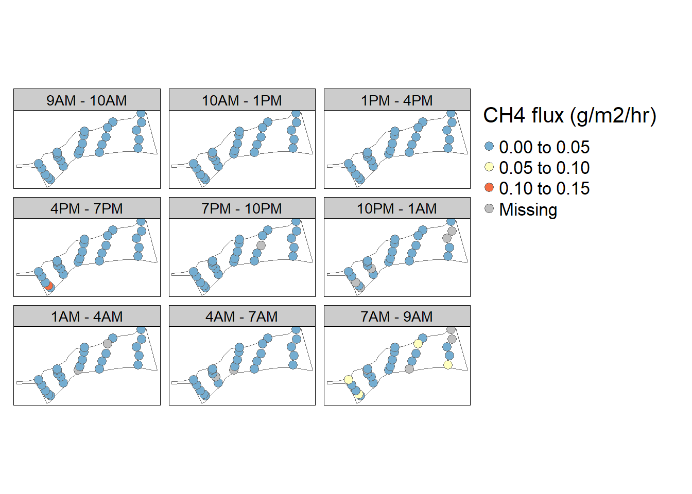
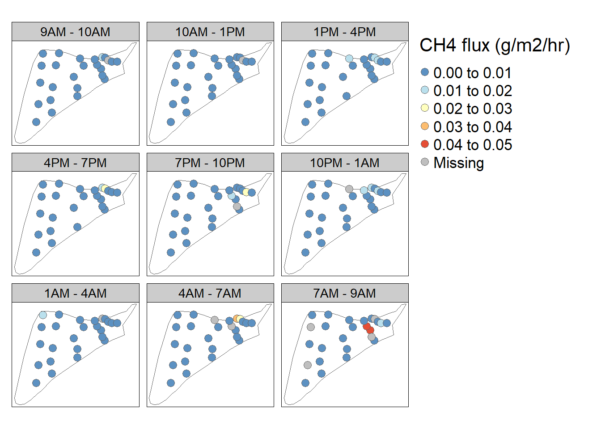
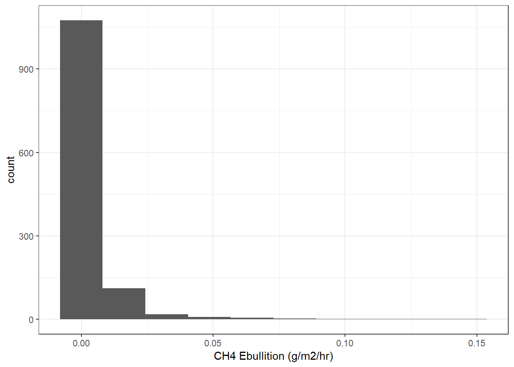

Chapter 3 Ebullition
7.8% of gas volume observations indicated a decline in gas volume from one time period to the next. Most of these observations occurred at night and in the pond covered with Wolffia. I set all negative observations of volume greater than -0.5mL change equal to 0. All other negative gas volume observations (<1%) were treated as missing data.
Because there was insufficient gas volume to measure CH4 concentration at every time-point, I used the average CH4 concentration measured from ebullition in a sampling event to calculate ebullition for the following figures.

3.3 Catfish 9/06/22-9/07/22 (Clouds cleared by 9AM, sparce clouds until ~ 4, cleared around 7, overcast the next morning)


3.6 Sister 3 8/22/22-8/23/22
tm_shape(sister3)+
tm_polygons(col = "white")+
tm_shape(sister3_pts_22_eb, bbox = st_bbox(catfish) %>% st_as_sfc())+
tm_dots("ch4_eb_g_m2_hr", size = 0.5, shape = 21, palette = "-RdYlBu", midpoint = NA, title = "CH4 flux (g/m2/hr)")+
tm_layout(scale = 1.5, legend.outside = T)+
tm_facets(by = "trip_wr", free.coords = F, inside.original.bbox = T)
## Warning: Removed 99 rows containing non-finite values (stat_bin).